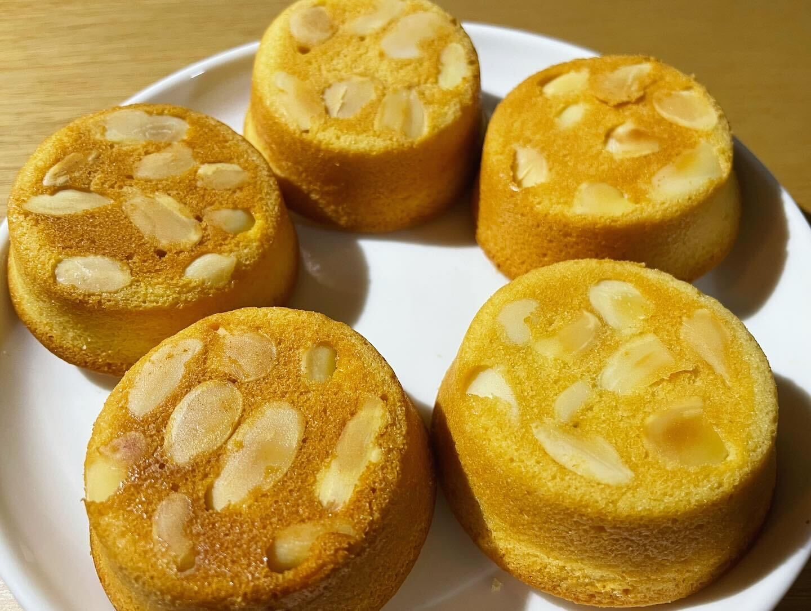

スプラシューターから、ジェットスイーパーなど短射程から長射程まであるシューター類。わかばシューターなど初心者でも使いやすい武器もあり主にナワバリバトルやガチエリアなどで使いやすい
スライドという他の武器にはない機能が入っており連射力も高いものが多いのがマニューバースパッタリーやガエンｆｆなど長射程魔でありガチホコでほこわりがしやすく使われやすい

ほとんどの武器が長射程や中射程であり、二段階のチャージがあるソイチューバーや１４式竹筒銃など武器によって特徴的な部分がある、キル性能が高く得意な人はどのルールでも使われる

しっとりなめらかな生地に、クランブルのサクサク食感が絶妙なチーズケーキです。
ミキサーやフードプロセッサーで手軽に生地作りができますので、お菓子作り初心者の方にもおすすめです。

クリなどを原料とするクリームを生地の上面に絞りかけたケーキ。モンブラン山の形に似せて作ったことからこう呼ばれる。上に降りかけられる白い粉砂糖は雪を表している。